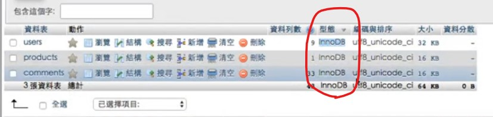
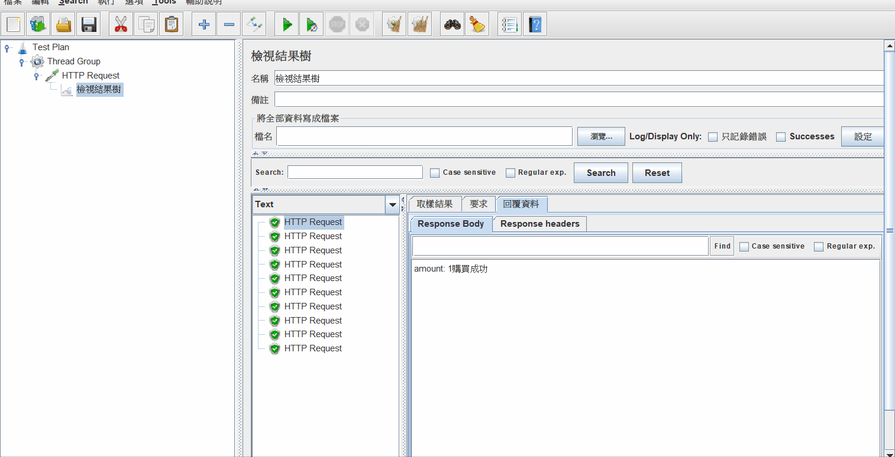
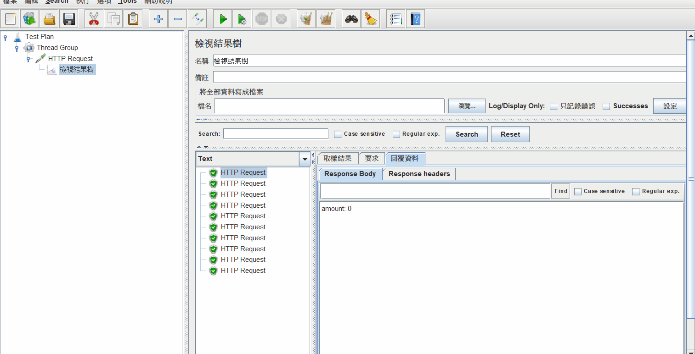

有趣的東西。
ACID 與 Transaction
我覺得在講 ACID 之前，先理解 transaction 是什麼會比較有幫助，所以這裡先解釋一下 transaction 是什麼。
先來看一下維基百科對 transaction 的定義：
資料庫交易（簡稱：交易）是資料庫管理系統執行過程中的一個邏輯單位，由一個有限的資料庫操作序列構成。
好，應該有看沒有懂，我也一樣。
總之呢，這邊只要把重點放在「單位」這個詞就好。可是還是有點抽象，什麼叫做單位？
來舉個例子吧，假設我有一個操作是「把 A 轉 20 塊給 B」，要完成這項操作會需要兩個 SQL 指令：
- 把 A 的錢扣 20 塊
- 把 B 的錢加 20 塊
我們會把 1 跟 2 都當成是一個 transaction，第一個 transaction 是「把 A 的錢扣 20 塊」，另一個是「把 B 的錢加 20 塊」。所以說呢，現在有「兩個」transaction，這個就是單位的意思。
好，這跟 ACID 又有什麼關係？
這要先談一下 transaction 本身的問題，有些時候我們無法確保一個 transaction 的結果會如我們所想。像上面的例子，如果 A 只有 20 塊，在 A 的錢還沒被扣掉時，突然又插入一個新的操作是把 A 的錢轉給 C，這個時候就有可能出現明明 A 只有 20 塊卻轉了 40 塊給 B 和 C 的結果發生。
這樣的 transaction 是不好的，我們希望盡量避免這種事情發生，所以才建立了一套原則，就是 ACID：
- Atomicity 原子性：要嘛全部成功 or 失敗
- Consistency 一致性：資料的總數要一樣，例如 A 跟 B 的錢原本加起來有 100 塊，那不管他們轉幾次帳，最後加起來應該也要是 100 塊
- Isolation 隔離性：A 一次只能轉帳給一個人，如果要轉帳給下個人，就要等上個人結束後再轉給下個人。
- Durability 持久性：寫入的資料要放在一個可以永久保存的地方
這邊可能比較抽象，不過我覺得只要知道 ACID 是用來確保 transaction 的結果可以按照我們所想，這一點就夠了。專有名詞的部分只要看個概念就好，不用一定要完全理解。
怎麼在 PHP 使用 transaction
1 | # 預設是 true，一個 query 就是當成一個 transaction |
流程：
- 上面兩個 query 會同時執行，而且保證都成功 or 失敗
- 如果有很多個 query 可以利用這種方式來執行，效能會比較好。
附註：如果要用 transaction 的功能，要先確認資料庫的引擎是什麼。

以 MySQL 和 MariaDB 來說是 innoDB，這兩個有支援。但如果是 MyISAN 就不支援。
lock
直接舉例子會比較好懂一點，先來段程式碼：
1 | require_once('conn.php'); |
把上面這段想成是「搶門票的系統」，而現在只剩下一張票。接著再假設現在有 10 個人「同時」對系統發出 request，那會發生什麼事？
這邊用 Apache JMeter 來做測試：

可以看到最後有 3 個人都買到票了，為什麼會這樣？這個叫做 race condition，可以參考我寫的這篇文章：理解什麼是 race-condition。
總之呢，這樣會造成超賣的問題，這明顯問題很大。所以才要有「Lock」機制。
簡單來說，lock 就是在一個 transaction 還沒完成以前都給鎖住，讓它不能做其他事情。這樣才能避免掉像上面那種問題。
所以可以這樣改寫程式碼：
附註：記得 lock 必須搭配 transaction 才可以用
1 | // 關閉自動 commit |
一樣用 Apache JMeter 來測試：

現在真的只會有一個人搶到票了，不會再有超賣的問題。
以上就是 lock 的作用。另外在範例裡有指定 id = 1，這個叫做「row lock」，代表是以 row 為單位。如果想以 table 為單位也是 OK 的，把 id = 1 拿掉就行了，這樣就會 lock 住整個 table，變成「table lock」。
不過要注意用 lock 的話會有效能問題。因為當 A 跟 B 同時發 request，假設 A 排在前面，那 B 就要等 A 結束後才會輪到他，換句話說就是要等前一個做完才輪下一個啦，所以當然速度會變慢。